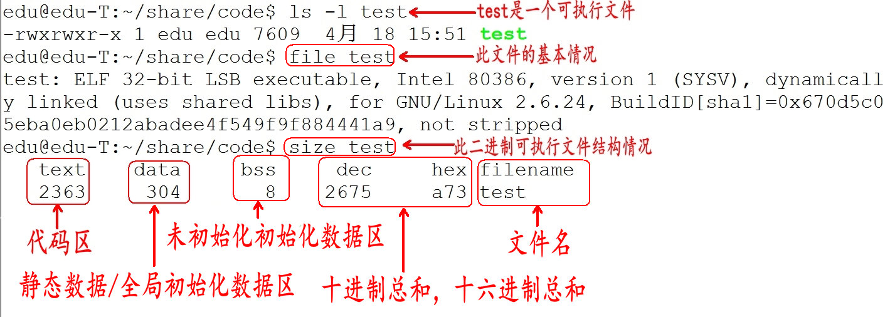
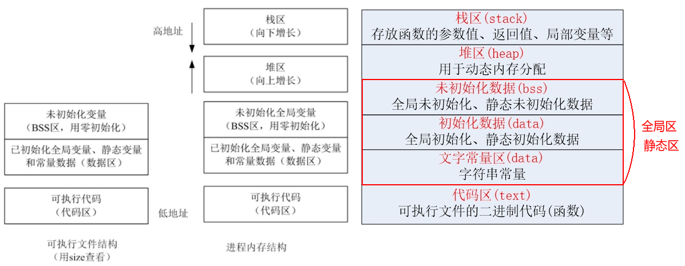
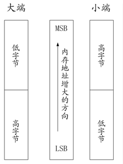
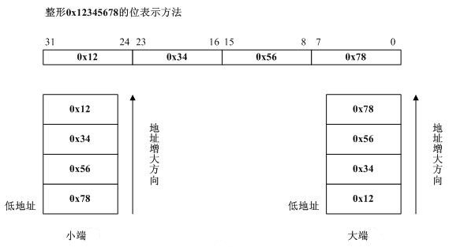
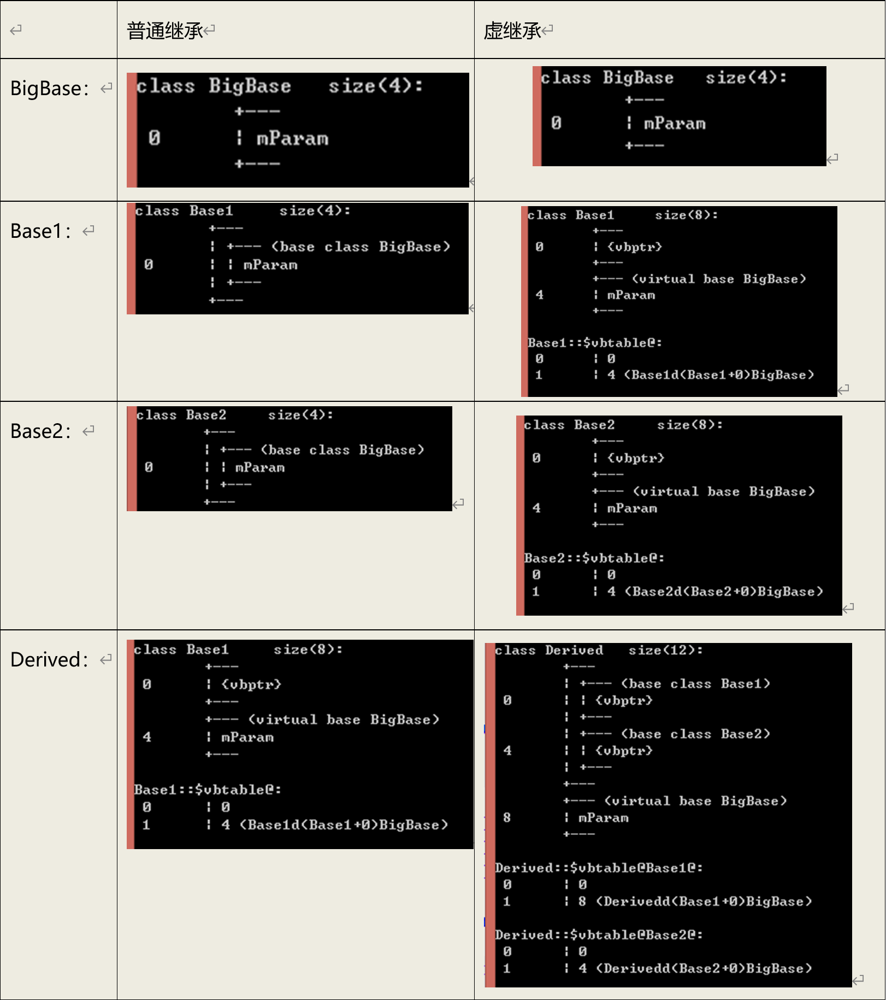

一、C语言篇
1、gcc/g++
1.1、为什么需要gcc/g++
编辑器(如vi、记事本)是指我用它来写程序的（编辑代码），而我们写的代码语句，电脑是不懂的，我们需要把它转成电脑能懂的语句，编译器就是这样的转化工具。就是说，我们用编辑器编写程序，由编译器编译后才可以运行！
1.2、gcc编译器介绍
编译器是将易于编写、阅读和维护的高级计算机语言翻译为计算机能解读、运行的低级机器语言的程序。
gcc（GNU Compiler Collection，GNU 编译器套件），是由 GNU 开发的编程语言编译器。gcc原本作为GNU操作系统的官方编译器，现已被大多数类Unix操作系统（如Linux、BSD、Mac OS X等）采纳为标准的编译器，gcc同样适用于微软的Windows。
gcc最初用于编译C语言，随着项目的发展gcc已经成为了能够编译C、C++、Java、Ada、fortran、Object C、Object C++、Go语言的编译器大家族。
gcc最初用于编译C语言，随着项目的发展gcc已经成为了能够编译C、C++、Java、Ada、fortran、Object C、Object C++、Go语言的编译器大家族。
1.3、编译命令
编译命令格式：
gcc [-option1] …
g++ [-option1] …
命令、选项和源文件之间使用空格分隔
一行命令中可以有零个、一个或多个选项
文件名可以包含文件的绝对路径，也可以使用相对路径
如果命令中不包含输出可执行文件的文件名，可执行文件的文件名会自动生成一个默认名，Linux平台为a.out，Windows平台为a.exe
gcc、g++编译常用选项说明：
| 选项 | 含义 |
|---|---|
| -o file | 指定生成的输出文件名为file |
| -E | 只进行预处理 |
| -S(大写) | 只进行预处理和编译 |
| -c(小写) | 只进行预处理、编译和汇编 |
1.4、gcc/g++的区别
gcc与g++都可以编译c代码和c++代码, 但是: 后缀为.c的，gcc会把它当做C程序, 而g++当做是C++程序; 后缀为.cpp的，两者都会认为是C++程序.
编译阶段，可以使用gcc/g++, g++会自动调用gcc。而链接阶段,可以用g++或者gcc -lstdc++
,因为gcc命令不能自动和c++程序使用的库链接，通常用g++来完成。
2、C/C++编译过程
2.1、编译步骤
C代码编译成可执行程序经过4步：
1）预处理：宏定义展开、头文件展开、条件编译等，同时将代码中的注释删除，这里并不会检查语法
2) 编译：检查语法，将预处理后文件编译生成汇编文件
3）汇编：将汇编文件生成目标文件(二进制文件)
4）链接：C语言写的程序是需要依赖各种库的，所以编译之后还需要把库链接到最终的可执行程序中去

2.2、gcc编译过程
1) 分步编译
预处理：gcc -E hello.c -o hello.i
编 译：gcc -S hello.i -o hello.s
汇 编：gcc -c hello.s -o hello.o
链 接：gcc hello.o -o hello_elf
| 选项 | 含义 |
|---|---|
| -E | 只进行预处理 |
| -S(大写) | 只进行预处理和编译 |
| -c(小写) | 只进行预处理、编译和汇编 |
| -o file | 指定生成的输出文件名为 file |
| \文件后缀** | \含义** |
|---|---|
| .c | C 语言文件 |
| .i | 预处理后的 C 语言文件 |
| .s | 编译后的汇编文件 |
| .o | 编译后的目标文件 |
2) 一步编译
gcc hello.c -o demo
2.3、查找程序所依赖的动态库
１）Linux平台下，ldd(“l”为字母) 可执行程序
２）Windows平台下，需要相应软件(Depends.exe)
3、CPU内部结构与寄存器
3.1、CPU总线
数据总线
（1） 是CPU与内存或其他器件之间的数据传送的通道。
（2）数据总线的宽度决定了CPU和外界的数据传送速度。
（3）每条传输线一次只能传输1位二进制数据。eg: 8根数据线一次可传送一个8位二进制数据(即一个字节)。
（4）数据总线是数据线数量之和。
数据总线数据总线是CPU与存储器、CPU与I/O接口设备之间传送数据信息(各种指令数据信息)的总线，这些信号通过数据总线往返于CPU与存储器、CPU与I/O接口设备之间，因此，数据总线上的信息是双向传输的。
地址总线
（1）CPU是通过地址总线来指定存储单元的。
（2）地址总线决定了cpu所能访问的最大内存空间的大小。eg: 10根地址线能访问的最大的内存为1024位二进制数据（1024个内存单元）(1B)
（3）地址总线是地址线数量之和。
地址总线（Address Bus）是一种计算机总线，是CPU或有DMA能力的单元，用来沟通这些单元想要访问（读取/写入）计算机内存组件/地方的物理地址。它是单向的，只能从CPU传向外部存储器或I/O端口
有个说法：64位系统装了64位操作系统，最大物理内存理论上=2的64次方；然而实际上地址总线只用到了35位，所以最大物理内存是32G大小
控制总线
（1）CPU通过控制总线对外部器件进行控制。
（2）控制总线的宽度决定了CPU对外部器件的控制能力。
（3）控制总线是控制线数量之和。
控制总线，英文名称：ControlBus，简称：CB。控制总线主要用来传送控制信号和时序信号。控制信号中，有的是微处理器送往存储器和输入输出设备接口电路的，如读/写信号，片选信号、中断响应信号等；也有是其它部件反馈给CPU的
3.2、64位和32位系统区别
寄存器是CPU内部最基本的存储单元
CPU的主要组成包括了运算器和控制器。运算器是由算术逻辑单元（ALU）、累加器、状态寄存器、通用寄存器组等组成。
CPU位数=CPU中寄存器的位数=CPU能够一次并行处理的数据宽度（位数）=数据总线宽度
CPU的位宽(位数)一般是以 min{ALU位宽、通用寄存器位宽、数据总线位宽}决定的
CPU对外是通过总线(地址、控制、数据)来和外部设备交互的，总线的宽度是8位，同时CPU的寄存器也是8位，那么这个CPU就叫8位CPU
如果总线是32位，寄存器也是32位的，那么这个CPU就是32位CPU
有一种CPU内部的寄存器是32位的，但总线是16位，准32位CPU
所有的64位CPU兼容32位的指令，32位要兼容16位的指令，所以在64位的CPU上是可以识别32位的指令
在64位的CPU构架上运行了64位的软件操作系统，那么这个系统是64位
在64位的CPU构架上，运行了32位的软件操作系统，那么这个系统就是32位
64位的软件不能运行在32位的CPU之上
3.3、寄存器、缓存、内存三者关系
寄存器是中央处理器内的组成部份。寄存器是有限存贮容量的高速存贮部件，它们可用来暂存指令、数据和位址。在中央处理器的控制部件中，包含的寄存器有指令寄存器(IR)和程序计数器(PC)。在中央处理器的算术及逻辑部件中，包含的寄存器有累加器(ACC)。
内存包含的范围非常广，一般分为只读存储器（ROM）、随机存储器（RAM）和高速缓存存储器（cache）。
寄存器是CPU内部的元件，寄存器拥有非常高的读写速度，所以在寄存器之间的数据传送非常快。
Cache ：即高速缓冲存储器，是位于CPU与主内存间的一种容量较小但速度很高的存储器。由于CPU的速度远高于主内存，CPU直接从内存中存取数据要等待一定时间周期，Cache中保存着CPU刚用过或循环使用的一部分数据，当CPU再次使用该部分数据时可从Cache中直接调用,这样就减少了CPU的等待时间,提高了系统的效率。Cache又分为一级Cache(L1 Cache)和二级Cache(L2 Cache)，L1 Cache集成在CPU内部，L2 Cache早期一般是焊在主板上,现在也都集成在CPU内部，常见的容量有256KB或512KB L2 Cache。
总结：大致来说数据是通过内存-Cache-寄存器，Cache缓存则是为了弥补CPU与内存之间运算速度的差异而设置的的部件。
4、内存、地址和指针
4.1、内存
内存含义：
存储器：计算机的组成中，用来存储程序和数据，辅助CPU进行运算处理的重要部分。
内存：内部存贮器，暂存程序/数据——掉电丢失 SRAM、DRAM、DDR、DDR2、DDR3。
外存：外部存储器，长时间保存程序/数据—掉电不丢ROM、ERRROM、FLASH（NAND、NOR）、硬盘、光盘。
内存是沟通CPU与硬盘的桥梁：
暂存放CPU中的运算数据
暂存与硬盘等外部存储器交换的数据
4.2、物理存储器和存储地址空间
有关内存的两个概念：物理存储器和存储地址空间。
物理存储器：实际存在的具体存储器芯片。
主板上装插的内存条
显示卡上的显示RAM芯片
各种适配卡上的RAM芯片和ROM芯片
存储地址空间：对存储器编码的范围。我们在软件上常说的内存是指这一层含义。
编码：对每个物理存储单元（一个字节）分配一个号码
寻址：可以根据分配的号码找到相应的存储单元，完成数据的读写
4.3、内存地址
将内存抽象成一个很大的一维字符数组。
编码就是对内存的每一个字节分配一个32位或64位的编号（与32位或者64位处理器相关）。
这个内存编号我们称之为内存地址。
内存中的每一个数据都会分配相应的地址：
char:占一个字节分配一个地址
int: 占四个字节分配四个地址
float、struct、函数、数组等
4.4、指针和指针变量
内存区的每一个字节都有一个编号，这就是“地址”。
如果在程序中定义了一个变量，在对程序进行编译或运行时，系统就会给这个变量分配内存单元，并确定它的内存地址(编号)
指针的实质就是内存“地址”。指针就是地址，地址就是指针。
指针是内存单元的编号，指针变量是存放地址的变量。
通常我们叙述时会把指针变量简称为指针，实际他们含义并不一样
5、存储类型
5.1、auto
- 普通局部变量，自动存储，该对象会自动创建和销毁，调用函数时分配内存，函数结束时释放内存。只在{}内有效，存放在堆栈中一般省略auto, 不会被默认初始化，初值不随机
- 全局变量，不允许声明为auto变量， register不适用于全局变量，生命周期由定义到程序运行结束，没有初始化会自动赋值0或空字符。全局变量属于整个程序，不同文件中不能有同名的全局变量，通过extern在其他文件中引用使用
5.2、static
- 静态局部变量，生命周期由定义到程序运行结束，在编译时赋初值，只初始化一次，没有初始化会自动赋值0或空字符。只在当前{}内有效
- 静态全局变量，生命周期由定义到程序运行结束，在编译时赋初值，只初始化一次，没有初始化会自动赋值0或空字符。从定义到文件结尾起作用，在一个程序中的其他文件中可以定义同名的静态全局变量，因为作用于不冲突。
5.3、extern
外部变量声明，是指这是一个已在别的地方定义过的对象，这里只是对变量的一次重复引用，不会产生新的变量。
使用extern时，注意不能重复定义，否则编译报错
// 程序文件一： extern int a = 10; //编译警告，extern的变量最好不要初始化 // 程序文件二： extern int a = 20; //重复定义，应改为extern int a;如果我们希望该外部变量只能在本文件内使用，而不能被其他文件引用可以在外部变量定义时加static声明。防止别人写的模块误用。
在函数外部定义的全局变量，作用域开始于变量定义，结束于程序文件的结束。我们可以extern来声明外部变量来扩展它的作用域。同一个文件内，extern声明之后就可以作用域扩大到声明处到文件结束。比如在一个函数之后定义外部变量a，之后的函数可以使用该变量，但是之前的函数不能使用，加extern可以解决。
#include <stdio.h> extern int g1; int main(void) { extern int g2; printf("%d,%d\n", g1,g2); return 0; } int g1 = 77; int g2 = 88;
- 多个文件时，可以在未定义该外部变量的文件内做extern声明即可以使用。但是需要注意可能执行一个文件时改变了该全局变量的值，影响其他文件的调用。编译时遇到extern，会先在文件内找是否定义了该外部变量。如果未找到则在链接时在其他文件中找。
5.4、register
寄存器变量，请求编译器将这个变量保存在CPU的寄存器中，从而加快程序的运行.只是建议CPU这样做，非强制,声明变量为register,编译器并不一定会将它处理为寄存器变量
动态和静态变量都是存放在内存中，程序中遇到该值时用控制器发指令将变量的值送到运算器中，需要存数再保存到内存中。如果频繁使用一个变量，比如一个函数体内的多次循环每次都引用该局部变量，我们则可以把局部变量的值放到CPU的寄存器中，叫寄存器变量。不需要多次到内存中存取提高效率。
但是只能局部自动变量和形参可以做寄存器变量。在函数调用时占用一些寄存器，函数结束时释放。不同系统对register要求也不一样，比如对定义register变量个数，数据类型等限制，有的默认为自动变量处理。所以在程序一般也不用。
register是不能取址的。比如
int i；(自动为auto)int *p=&i;是对的， 但register int j; int *p = &j;是错的，因为无法对寄存器的定址。#include <stdio.h> #include <time.h> #define TIME 1000000000 int m, n = TIME; /* 全局变量 */ int main(void) { time_t start, stop; register int a, b = TIME; /* 寄存器变量 */ int x, y = TIME; /* 一般变量 */ time(&start); for (a = 0; a < b; a++); time(&stop); printf("寄存器变量用时: %d 秒\n", stop - start); time(&start); for (x = 0; x < y; x++); time(&stop); printf("一般变量用时: %d 秒\n", stop - start); time(&start); for (m = 0; m < n; m++); time(&stop); printf("全局变量用时: %d 秒\n", stop - start); return 0; }
5.5、volatile
程序在使用变量时, 特别是连续多次使用变量时, 一般是载入寄存器, 直接从寄存器存取, 之后再还回内存;但如果此变量在返回内存时, 假如内存中的值已经改变了(从外部修改了)怎么办?
为了避免这种情况的发生, 可以用 volatile 说明此变量, 以保证变量的每次使用都是直接从内存存取.
但这样肯定会影响效率, 幸好它并不常用.
另外: 如果 const volatile 同时使用, 这表示此变量只接受外部的修改.
#include <stdio.h>
volatile int num = 123;
int main(void)
{
printf("%d\n", num);
getchar();
return 0;
}5.6、总结
| 关键字 | 类型 | 生命周期 | 作用域 | 修饰对象 | 所属区 |
|---|---|---|---|---|---|
| auto[可省略] | 普通局部变量 | 定义到{}运行结束 | ｛｝ | 变量 | 栈区 |
| static | 静态局部变量 | 定义到程序运行结束 | ｛｝ | 变量和函数 | 初始化在data段，未初始化在BSS段 |
| 全局变量 | 定义到程序运行结束 | 定义到文件结尾 | 初始化在data段，未初始化在BSS段 | ||
| extern | 全局变量 | 定义到程序运行结束 | 声明处到文件结尾 | 变量和函数 | 初始化在data段，未初始化在BSS段 |
| static | 全局变量 | 整个程序运行期 | 声明处到文件结尾 | 变量和函数 | 初始化在data段，未初始化在BSS段 |
| register | 寄存器变量 | 定义到{}运行结束 | ｛｝ | 变量 | 运行时存储在CPU寄存器 |
| extern | 函数 | 整个程序运行期 | 声明处到文件结尾 | 代码区 | |
| static | 函数 | 整个程序运行期 | 声明处到文件结尾 | 代码区 |
6、内存分区
C代码经过预处理、编译、汇编、链接4步后生成一个可执行程序。在 Linux 下，程序是一个普通的可执行文件，以下列出一个二进制可执行文件的基本情况：

通过上图可以得知，在没有运行程序前，也就是说程序没有加载到内存前，可执行程序内部已经分好3段信息，分别为代码区（text）、数据区（data）和未初始化数据区（bss）3 个部分（有些人直接把data和bss合起来叫做静态区或全局区）。
代码区
存放 CPU 执行的机器指令。通常代码区是可共享的（即另外的执行程序可以调用它），使其可共享的目的是对于频繁被执行的程序，只需要在内存中有一份代码即可。代码区通常是只读的，使其只读的原因是防止程序意外地修改了它的指令。另外，代码区还规划了局部变量的相关信息。
全局初始化数据区/静态数据区（data段）
该区包含了在程序中明确被初始化的全局变量、已经初始化的静态变量（包括全局静态变量和局部静态变量）和常量数据（如字符串常量）。
未初始化数据区（又叫 bss 区）
存入的是全局未初始化变量和未初始化静态变量。未初始化数据区的数据在程序开始执行之前被内核初始化为 0 或者空（NULL）。
程序在加载到内存前，代码区和全局区(data和bss)的大小就是固定的，程序运行期间不能改变。然后，运行可执行程序，系统把程序加载到内存，除了根据可执行程序的信息分出代码区（text）、数据区（data）和未初始化数据区（bss）之外，还额外增加了栈区、堆区。

代码区（text segment）
加载的是可执行文件代码段，所有的可执行代码都加载到代码区，这块内存是不可以在运行期间修改的。
只读数据区（文字常量区 RO data）
只读数区是程序使用的一些不会被更改的数据。一般是const修饰的变量以及程序中使用的文字常量。
已初始化数据区 （RW data）
加载的是可执行文件数据段，存储于数据段（全局初始化，静态初始化数据）的数据的生存周期为整个程序运行过程。
未初始化数据区（BSS）
加载的是可执行文件BSS段，位置可以分开亦可以紧靠数据段，存储于数据段的数据（全局未初始化，静态未初始化数据）的生存周期为整个程序运行过程。
堆区（heap）
堆是一个大容器，它的容量要远远大于栈，但没有栈那样先进后出的顺序。用于动态内存分配。堆在内存中位于BSS区和栈区之间。一般由程序员分配和释放，若程序员不释放，程序结束时由操作系统回收。
栈区（stack）
栈是一种先进后出的内存结构，由编译器自动分配释放，存放函数的参数值、返回值、局部变量等。在程序运行过程中实时加载和释放，因此，局部变量的生存周期为申请到释放该段栈空间。
7、结构体字节对齐
7.1、内存对齐原因
struct data
{
char c;
int i;
};
int main()
{
printf("%d\n", sizeof(struct data)); // 5还是 8?
return 0;
}在Linux 32位架构下，假设变量stu存放在内存中的起始地址为0x00，那么c的起始地址为0x00、i的起始地址为0x01，变量stu共占用了5个字节：
对变量c访问：CPU只需要一个读周期
变量i访问：
首先CPU用一个读周期，从0x00处读取了4个字节(32位架构)，然后将0x01-0x03的3个字节暂存。
再花一个读周期读取了从0x04-0x07的4字节数据，将0x04这个字节与刚刚暂存的3个字节进行拼接从而读取到成员变量i的值。
读取一个成员变量i，CPU却花费了2个读周期。
如果数据成员i的起始地址被放在了0x04处
读取c成员，花费周期为1
读取i所花费的周期也变成了1
引入字节对齐可以避免读取效率的下降，同时也浪费了3个字节的空间(0x01-0x03)
结构体内部成员对齐是为了实现用空间换取时间。
7.2、内存对齐原则
原则1：数据成员的对齐规则
1) 最大对齐单位以CPU架构对齐，如Linux 32位最大以4字节对齐，Linux 64位最大以8字节对齐，vs(32位、64位)最大对齐单位为8字节
2) 需要和结构体的最大成员和CPU架构(32位或64位)对比，取小的作为对齐单位
3) 字节对齐也可以通过程序控制，采用指令：
#pragma pack(xx) #pragma pack(1) //1字节对齐 #pragma pack(2) //2字节对齐 #pragma pack(4) //4字节对齐 #pragma pack(8) //8字节对齐 #pragma pack(16) //16字节对齐
#include <stdio.h>
#include <stdlib.h>
#pragma pack(2)
typedef struct
{
int aa1; //4个字节对齐 1111
char bb1;//1个字节对齐 1
short cc1;//2个字节对齐 011
char dd1; //1个字节对齐 1
} testlength;
int length = sizeof(testlength); //2个字节对齐，length = 10
int main(){
printf(“length=%d\n”, length); // length=10
}
尽管通过pragma pack(xx)可以指定字节对齐单位，但需要和结构体的最大成员、CPU架构(32位或64位)对比，取最小的作为对齐单位。
- 原则2：数据成员的偏移起点
结构体（struct）的数据成员，第一个数据成员放在偏移量为0的地方，以后每个数据成员存放在偏移量为该数据成员类型大小的整数倍的地方（比如int在32位机器为４字节，则要从4的整数倍地址开始存储）
- 原则3：收尾工作
结构体的总大小，也就是sizeof的结果，必须是对齐单位的整数倍，不足的要补齐。
## 8、typedef与define的区别
- typedef为C语言的关键字，作用是为一种数据类型(基本类型或自定义数据类型)定义一个新名字，不能创建新类型。
- 与#define不同，typedef仅限于数据类型，而不是能是表达式或具体的值
- define发生在预处理，typedef发生在编译阶段
## 9、C语言文本操作的区别
### 9.1 二进制文件和文本文件
- b是二进制模式的意思，b只是在Windows有效，在Linux用r和rb的结果是一样的
- Unix和Linux下所有的文本文件行都是\n结尾，而Windows所有的文本文件行都是\r\n结尾
- 在Windows平台下，以“文本”方式打开文件，不加b：
- 当读取文件的时候，系统会将所有的 "\r\n" 转换成 "\n"
- 当写入文件的时候，系统会将 "\n" 转换成 "\r\n" 写入
- 以"二进制"方式打开文件，则读\写都不会进行这样的转换
- 在Unix/Linux平台下，“文本”与“二进制”模式没有区别，"\r\n" 作为两个字符原样输入输出
### 9.2 文本结尾
在C语言中，EOF表示文件结束符(end of file)。在while循环中以EOF作为文件结束标志，这种以EOF作为文件结束标志的文件，必须是文本文件。在文本文件中，数据都是以字符的ASCII代码值的形式存放。我们知道，ASCII代码值的范围是0~127，不可能出现-1，因此可以用EOF作为文件结束标志。
`#define EOF (-1)`
当把数据以二进制形式存放到文件中时，就会有-1值的出现，因此不能采用EOF作为二进制文件的结束标志。为解决这一个问题，ANSI C提供一个feof函数，用来判断文件是否结束。feof函数既可用以判断二进制文件又可用以判断文本文件。
```c
#include <stdio.h>
int feof(FILE * stream);
功能：检测是否读取到了文件结尾。判断的是最后一次“读操作的内容”，不是当前位置内容(上一个内容)。
参数：
stream：文件指针
返回值：
非0值：已经到文件结尾
0：没有到文件结尾10、void
void的作用
- 对函数参数的限定：当不需要传入参数时，即
function (void); - 对函数返回值的限定：当函数没有返回值时，即
void function(void);
void指针的作用
（1）void指针可以指向任意的数据类型，即任意类型的指针可以赋值给void指针
int *a;
void *p;
p=a;如果void指针赋值给其他类型，则需要强制转换；a=（int *）p;
（2）在ANSI C标准中不允许对void指针进行算术运算，因为没有特定的数据类型，即在内存中不知道移动多少个字节；而在GNU标准中，认为void指针和char指针等同。
应用
（1）void指针一般用于应用的底层，比如malloc函数的返回类型是void指针，需要再强制转换；
（2）文件句柄HANDLE也是void指针类型，这也是句柄和指针的区别；
（3）内存操作函数的原型也需要void指针限定传入参数：
void * memcpy (void *dest, const void *src, size_t len);
void * memset (void *buffer, int c, size_t num );（4）面向对象函数中底层对基类的抽象。
11、数据类型的本质
数据类型可理解为创建变量的模具：是固定内存大小的别名。
数据类型的作用：编译器预算对象（变量）分配的内存空间大小。
12、变量的本质
变量的本质：一段连续内存空间的别名。
1）程序通过变量来申请和命名内存空间 int a = 0
2）通过变量名访问内存空间
3）不是向变量读写数据，而是向变量所代表的内存空间中读写数据13、数组与指针的关系
数组不是指针，数组名也只有在表达式中才会被当成一个指针常量。数组名在表达式中使用的时候，编译器才会产生一个指针常量。
p[i]这种写法只不过是*(p + i)的简便写法。实际上，至少对于编译器来说，[]这样的运算符完全可以不存在。[]运算符是为了方便人们读写而引入的，是一种语法糖。当数组名作为sizeof操作符的操作数的时候，此时sizeof返回的是整个数组的长度，而不是指针数组指针的长度。
当数组名作为 & 操作符的操作数的时候，此时返回的是一个指向数组的指针，而不是指向某个数组元素的指针常量。
二级指针是指向指针的指针，而指针数组则是元素类型为指针的数组。虽然它们是不一样的，但是在表达式中，它们是等效的。
14、字节序(大端、小端)
14.1 大端和小端
计算机的内存最小单位是字节。字节序是指多字节(大于1字节)数据的存储顺序，在设计计算机系统的时候，有两种处理内存中数据的方法：大端格式、小端格式。
小端格式(Little-Endian)：将低位字节数据存储在低地址。X86和ARM都是小端对齐。
大端格式(Big-Endian)：将高位字节数据存储在低地址。很多Unix服务器的CPU是大端对齐的、网络上数据是以大端对齐。

对于整形 0x12345678，它在大端格式和小端格式的系统中，分别如下图所示的方式存放：

14.2 网络字节序和主机字节序
网络字节顺序NBO(Network Byte Order)
在网络上使用统一的大端模式，低字节存储在高地址，高字节存储在低地址。主机字节序顺序HBO(Host Byte Order)
不同的机器HBO不相同，与CPU设计相关，数据的顺序是由CPU决定的，而与操作系统无关。处理器 |操作系统 |字节排序|
Alpha 全部 Little endian
HP-PA NT Little endian
HP-PA UNIX Big endian
Intelx86 全部 Little endian <—–x86系统是小端字节序系统
Motorola680x() 全部 Big endian
MIPS NT Little endian
MIPS UNIX Big endian
PowerPC NT Little endian
PowerPC 非NT Big endian <—–PPC系统是大端字节序系统
RS/6000 UNIX Big endian
SPARC UNIX Big endian
IXP1200 ARM核心 全部 Little endian
相关函数：
htons 把unsigned short类型从主机序转换到网络序
htonl 把unsigned long类型从主机序转换到网络序
ntohs 把unsigned short类型从网络序转换到主机序
ntohl 把unsigned long类型从网络序转换到主机序
头文件：#include <netinet/in.h>
定义函数：unsigned short ntohs(unsigned short netshort);
函数说明：ntohs()用来将参数指定的16 位netshort 转换成主机字符顺序.
返回值：返回对应的主机顺序.
范例：参考getservent().#include <stdio.h>
#include <winsock.h> // windows使用winsock.h
int main()
{
//左边是高位，右边是低位，高位放高地址，低位放低地址
int a = 0x11223344;
unsigned char *p = (unsigned char *)&a;
int i;
for (i = 0; i < 4; i++)
{
printf("%x\n", p[i]);
}
u_long b = htonl(a);
unsigned char *q = (unsigned char *)&b;
for (i = 0; i<4; i++){
printf("%x\n", q[i]);
}
return 0;
}
// gcc hello.c -lwsock32 -o hello
// 编译时添加-lwsock32，不然会报错undefined reference to `htonl@4'
// 在编译socket程序的时候，一定要加上-l wsock32选项，因为mingw默认没有包含windows库15、数组指针
// 1) 先定义数组类型，再根据类型定义指针变量
typedef int A[10];
A *p = NULL;
// 2) 先定义数组指针类型，根据类型定义指针变量
typedef int(*P)[10]; //第一个()代表指针，第二个[]代表数组
P q; //数据组指针变量
// 3) 直接定义数组指针变量
int (*q)[10];
16、深拷贝和浅拷贝
结构体:
浅拷贝 不同结构体成员指针变量指向同一块内存
深拷贝 不同结构体成员指针变量指向不同的内存
类:
浅拷贝 类中有动态分配的空间的指针指向相同
深拷贝 类中有动态分配的空间的指针指向不同的内存空间
17、#include< > 与 #include “”的区别
“” 表示系统先在file1.c所在的当前目录找file1.h，如果找不到，再按系统指定的目录检索。
< > 表示系统直接按系统指定的目录检索。
注意：
- #include <>常用于包含库函数的头文件
- #include “”常用于包含自定义的头文件
- 理论上#include可以包含任意格式的文件(.c .h等) ，但我们一般用于头文件的包含。
18、静态库和动态库
18.1、静态库优缺点
静态库在程序的链接阶段被复制到了程序中，和程序运行的时候没有关系；
程序在运行时与函数库再无瓜葛，移植方便；
浪费空间和资源，所有相关的目标文件与牵涉到的函数库被链接合成一个可执行文件。
18.2、动态库
要解决空间浪费和更新困难这两个问题，最简单的办法就是把程序的模块相互分割开来，形成独立的文件，而不是将他们静态的链接在一起。
简单地讲，就是不对哪些组成程序的目标程序进行链接，等程序运行的时候才进行链接。也就是说，把整个链接过程推迟到了运行时再进行，这就是动态链接的基本思想。
18.3、动态库的lib文件和静态库的lib文件的区别
在使用动态库的时候，往往提供两个文件：一个引入库（.lib）文件（也称“导入库文件”）和一个DLL（.dll）文件。
虽然引入库的后缀名也是“lib”，但是，动态库的引入库文件和静态库文件有着本质的区别，对一个DLL文件来说，其引入库文件（.lib）包含该DLL导出的函数和变量的符号名，而.dll文件包含该DLL实际的函数和数据。
在使用动态库的情况下，在编译链接可执行文件时，只需要链接该DLL的引入库文件，该DLL中的函数代码和数据并不复制到可执行文件，直到可执行程序运行时，才去加载所需的DLL，将该DLL映射到进程的地址空间中，然后访问DLL中导出的函数。
二、C++篇
1、c语言和c++语言的关系
“c++”中的++来自于c语言中的递增运算符++，该运算符将变量加1。c++起初也叫”c with clsss”。通过名称表明，c++是对C的扩展，因此c++是c语言的超集，这意味着任何有效的c程序都是有效的c++程序。c++程序可以使用已有的c程序库。
c++语言在c语言的基础上添加了面向对象编程和泛型编程的支持。c++继承了c语言高效，简洁，快速和可移植的传统。
c++融合了3种不同的编程方式:
c语言代表的过程性语言.
c++在c语言基础上添加的类代表的面向对象语言.
c++模板支持的泛型编程。
2、左值和右值
判断是否是左值，有一个简单的方法，就是看看能否取它的地址，能取地址就是左值，否则就是右值。
当一个对象成为右值时，使用的是它的值(内容), 而成为左值时，使用的是它的身份（在内存中的位置）。
平常所说的引用，实际上指的就是左值引用lvalue reference, 常用单个&来表示。左值引用只能接收左值，不能接收右值。const关键字会让左值引用变得不同，它可以接收右值。
为了支持移动操作，在c++11版本，增加了右值引用。右值引用一般用于绑定到一个即将销毁的对象，所以右值引用又通常出现在移动构造函数中。
看完下面的例子，左值和右值基本就清楚了，左值具有持久的状态，有独立的内存空间，右值要么是字面常量，要么就是表达式求值过程中创建的临时对象
int i = 66;
int &r = i ; //r 是一个左引用，绑定左值 i
int &&rr = i ; //rr是一个右引用，绑定到左值i , 错误！
int &r2 = i*42 ; // r2 是一个左引用， 而i*42是一个表达式，计算出来的结果是一个右值。 错误！
const int &r3 = i*42; // const修饰的左值引用 正确
int &&rr2 = i*42 ; // 右引用，绑定右值 正确3、c++对c的扩展
3.1 三目运算符
c语言三目运算表达式返回值为数据值，为右值，不能赋值。
c++语言三目运算表达式返回值为变量本身(引用)，为左值，可以赋值。
int a = 10;
int b = 20;
printf("ret:%d\n", a > b ? a : b);
//思考一个问题，(a > b ? a : b) 三目运算表达式返回的是什么？
cout << "b:" << b << endl;
//返回的是左值，变量的引用
(a > b ? a : b) = 100;//返回的是左值，变量的引用
cout << "b:" << b << endl;3.2 bool
c++中新增bool类型关键字
- bool类型只有两个值，true(1)， false（0）
- bool类型占1个字节
- 给bool类型赋值时, 非0值会自动转换为true(1), 0值会自动转换为false（0）
C语言中也有bool类型，在c99标准之前是没有bool关键字，c99标准已经有bool类型，包含头文件stdbool.h,就可以使用和c++一样的bool类型。
3.3 struct类型增强
c中定义结构体变量需要加上struct关键字，c++不需要。
c中的结构体只能定义成员变量，不能定义成员函数。c++即可以定义成员变量，也可以定义成员函数。
3.4 更严格的类型转换
在C++中，不同类型的变量一般是不能直接赋值的，需要相应的强转。
在C++中，所有的变量和函数都必须有类型
3.4 全局变量检测增强
int a = 10; //赋值，当做定义
int a; //没有赋值，当做声明
int main(){
printf("a:%d\n",a);
return EXIT_SUCCESS;
}
// 上面的代码在c++下编译失败，在c下编译通过。4、内部连接和外部连接
内部连接：如果一个名称对编译单元(.cpp)来说是局部的，在链接的时候其他的编译单元无法链接到它且不会与其它编译单元(.cpp)中的同样的名称相冲突。例如static函数，inline函数等（注 : 用static修饰的函数，本限定在本源码文件中，不能被本源码文件以外的代码文件调用。而普通的函数，默认是extern的，也就是说，可以被其它代码文件调用该函数。）
外部连接：如果一个名称对编译单元(.cpp)来说不是局部的，而在链接的时候其他的编译单元可以访问它，也就是说它可以和别的编译单元交互。 例如全局变量就是外部链接 。
5、C/C++中const的区别
1、const全局变量
c语言全局const会被存储到只读数据区。c++中全局const当声明extern或者对变量取地址时，编译器会分配存储地址，变量存储在只读数据段。两个都受到了只读数据区的保护，不可修改。
const int constA = 10;
int main(){
int* p = (int*)&constA;
*p = 200;
}
// 以上代码在c/c++中编译通过，在运行期，修改constA的值时，发生写入错误。原因是修改只读数据段的数据。2、const 局部变量
c语言中局部const存储在堆栈区，只是不能通过变量直接修改const只读变量的值，但是可以跳过编译器的检查，通过指针间接修改const值。
const int constA = 10;
int* p = (int*)&constA;
*p = 300;
printf("constA:%d\n",constA);
printf("*p:%d\n", *p);
// constA:300
// *p:300c++中对于局部的const变量要区别对待：
- 对于基础数据类型，也就是const int a = 10这种，编译器会把它放到符号表中，不分配内存，当对其取地址时，会分配内存。
const int constA = 10;
int* p = (int*)&constA;
*p = 300;
cout << "constA:" << constA << endl;
cout << "*p:" << *p << endl;
// constA:10
// *p:300
// constA在符号表中，当我们对constA取地址，这个时候为constA分配了新的空间，*p操作的是分配的空间，而constA是从符号表获得的值。
- 对于基础数据类型，如果用一个变量初始化const变量，如果const int a = b,那么也是会给a分配内存。
int b = 10;
const int constA = b;
int* p = (int*)&constA;
*p = 300;
cout << "constA:" << constA << endl;
cout << "*p:" << *p << endl;
// constA:300
// *p:300 - 对于自定数据类型，比如类对象，那么也会分配内存。
const Person person; //未初始化age
//person.age = 50; //不可修改
Person* pPerson = (Person*)&person;
//指针间接修改
pPerson->age = 100;
cout << "pPerson->age:" << pPerson->age << endl;
pPerson->age = 200;
cout << "pPerson->age:" << pPerson->age << endl;
// pPerson->age:100
// pPerson->age:200
//为person分配了内存，所以我们可以通过指针的间接赋值修改person对象。3、链接方式
c中const默认为外部连接，c++中const默认为内部连接.当c语言两个文件中都有const int a的时候，编译器会报重定义的错误。而在c++中，则不会，因为c++中的const默认是内部连接的。如果想让c++中的const具有外部连接，必须显示声明为: extern const int a = 10;
6、const与#define的区别
const有数据类型，可进行编译器类型安全检查。#define无类型，不可以进行类型检查
const有作用域，而#define不重视作用域，默认定义处到文件结尾。如果想定义在指定作用域下有效的常量，那么#define就不能用。
7、引用
&在此不是求地址运算，而是起标识作用。
类型标识符是指目标变量的类型
必须在声明引用变量时进行初始化。
引用初始化之后不能改变。
不能有NULL引用。必须确保引用是和一块合法的存储单元关联。
可以建立对数组的引用。
函数不能返回局部变量的引用
函数当左值，必须返回引用
引用的本质
引用的本质是在c++内部实现一个指针常量
Type& ref = val; // Type* const ref = val;
c++编译器在编译过程中使用常指针作为引用的内部实现，因此引用所占用的空间大小与指针相同，只是这个过程是编译器内部实现，用户不可见。
//发现是引用，转换为 int* const ref = &a;
void testFunc(int& ref){
ref = 100; // ref是引用，转换为*ref = 100
}
int main(){
int a = 10;
int& aRef = a; //自动转换为 int* const aRef = &a;这也能说明引用为什么必须初始化
aRef = 20; //内部发现aRef是引用，自动帮我们转换为: *aRef = 20;
cout << "a:" << a << endl;
cout << "aRef:" << aRef << endl;
testFunc(a);
return EXIT_SUCCESS;
}
8、面向对象的三大特性
封装
- 把变量（属性）和函数（操作）合成一个整体，封装在一个类中
- 对变量和函数进行访问控制
继承
c++最重要的特征是代码重用，通过继承机制可以利用已有的数据类型来定义新的数据类型，新的类不仅拥有旧类的成员，还拥有新定义的成员。
派生类继承基类，派生类拥有基类中全部成员变量和成员方法（除了构造和析构之外的成员方法），但是在派生类中，继承的成员并不一定能直接访问，不同的继承方式会导致不同的访问权限。
任何时候重新定义基类中的一个重载函数，在新类中所有的其他版本将被自动隐藏.
operator=也不能被继承，因为它完成类似构造函数的行为。多态
c++支持编译时多态(静态多态)和运行时多态(动态多态)，运算符重载和函数重载就是编译时多态，而派生类和虚函数实现运行时多态。
静态多态和动态多态的区别就是函数地址是早绑定(静态联编)还是晚绑定(动态联编)。如果函数的调用，在编译阶段就可以确定函数的调用地址，并产生代码，就是静态多态(编译时多态)，就是说地址是早绑定的。而如果函数的调用地址不能编译不能在编译期间确定，而需要在运行时才能决定，这这就属于晚绑定(动态多态,运行时多态)。
多态性改善了代码的可读性和组织性，同时也使创建的程序具有可扩展性。9、C++编译器优化技术：RVO/NRVO和复制省略
现代编译器缺省会使用RVO（return value optimization，返回值优化）、NRVO（named return value optimization、命名返回值优化）和复制省略（Copy elision）技术，来减少拷贝次数来提升代码的运行效率
注1：vc6、vs没有提供编译选项来关闭该优化，无论是debug还是release都会进行RVO和复制省略优化
注2：vc6、vs2005以下及vs2005+ Debug上不支持NRVO优化，vs2005+ Release支持NRVO优化
注3：g++支持这三种优化，并且可通过编译选项：-fno-elide-constructors来关闭优化
RVO
#include
class A
{
public:
A()
{
printf("%p construct\n", this);
}
A(const A& cp)
{
printf("%p copy construct\n", this);
}
~A()
{
printf("%p destruct\n", this);
}
};
A GetA()
{
return A();
}
int main()
{
{
A a = GetA();
}
return 0;
} 在g++和vc6、vs中，上述代码仅仅只会调用一次构造函数和析构函数 ，输出结果如下：
0x7ffe9d1edd0f construct
0x7ffe9d1edd0f destruct在g++中，加上-fno-elide-constructors选项关闭优化后，输出结果如下：
0x7ffc46947d4f construct // 在函数GetA中，调用无参构造函数A()构造出一个临时变量temp
0x7ffc46947d7f copy construct // 函数GetA return语句处，把临时变量temp做为参数传入并调用拷贝构造函数A(const A& cp)将返回值ret构造出来
0x7ffc46947d4f destruct // 函数GetA执行完return语句后，临时变量temp生命周期结束，调用其析构函数~A()
0x7ffc46947d7e copy construct // 函数GetA调用结束，返回上层main函数后，把返回值变量ret做为参数传入并调用拷贝构造函数A(const A& cp)将变量A a构造出来
0x7ffc46947d7f destruct // A a = GetA()语句结束后，返回值ret生命周期结束，调用其析构函数~A()
0x7ffc46947d7e destruct // A a要离开作用域，生命周期结束，调用其析构函数~A()注：临时变量temp、返回值ret均为匿名变量
NRVO
g++编译器、vs2005+ Release（开启/O2及以上优化开关）
修改上述代码，将GetA的实现修改成：
A GetA()
{
A o;
return o;
}在g++、vs2005+ Release中，上述代码也仅仅只会调用一次构造函数和析构函数 ，输出结果如下：
0x7ffe9d1edd0f construct
0x7ffe9d1edd0f destructg++加上-fno-elide-constructors选项关闭优化后，和上述结果一样
0x7ffc46947d4f construct
0x7ffc46947d7f copy construct
0x7ffc46947d4f destruct
0x7ffc46947d7e copy construct
0x7ffc46947d7f destruct
0x7ffc46947d7e destruct但在vc6、vs2005以下、vs2005+ Debug中，没有进行NRVO优化，输出结果为：
18fec4 construct // 在函数GetA中，调用无参构造函数A()构造出一个临时变量o
18ff44 copy construct // 函数GetA return语句处，把临时变量o做为参数传入并调用拷贝构造函数A(const A& cp)将返回值ret构造出来
18fec4 destruct // 函数GetA执行完return语句后，临时变量o生命周期结束，调用其析构函数~A()
18ff44 destruct // A a要离开作用域，生命周期结束，调用其析构函数~A()注：与g++、vs2005+ Release相比，vc6、vs2005以下、vs2005+ Debug只优化掉了返回值到变量a的拷贝，命名局部变量o没有被优化掉，所以最后一共有2次构造和析构的调用
复制省略
典型情况是：调用构造函数进行值类型传参
void Func(A a)
{
}
int main()
{
{
Func(A());
}
return 0;
}在g++和vc6、vs中，上述代码仅仅只会调用一次构造函数和析构函数 ，输出结果如下：
0x7ffeb5148d0f construct
0x7ffeb5148d0f destruct在g++中，加上-fno-elide-constructors选项关闭优化后，输出结果如下：
0x7ffc53c141ef construct // 在main函数中，调用无参构造函数构造实参变量o
0x7ffc53c141ee copy construct // 调用Func函数后，将实参变量o做为参数传入并调用拷贝构造函数A(const A& cp)将形参变量a构造出来
0x7ffc53c141ee destruct // 函数Func执行完后，形参变量a生命周期结束，调用其析构函数~A()
0x7ffc53c141ef destruct // 返回main函数后，实参变量o要离开作用域，生命周期结束，调用其析构函数~A()优化失效的情况
- 根据不同的条件分支，返回不同变量
- 返回参数变量
- 返回全局变量
- 返回复合函数类型中的成员变量
- 返回值赋值给已构造好的变量（此时会调用operator==赋值运算符）
https://www.cnblogs.com/kekec/p/11303391.html
10、explicit关键字
explicit用于修饰构造函数,防止隐式转化。
是针对单参数的构造函数(或者除了第一个参数外其余参数都有默认值的多参构造)而言。
class MyString{
public:
explicit MyString(int n){
cout << "MyString(int n)!" << endl;
}
MyString(const char* str){
cout << "MyString(const char* str)" << endl;
}
};
int main(){
//给字符串赋值？还是初始化？
//MyString str1 = 1;
MyString str2(10);
//寓意非常明确，给字符串赋值
MyString str3 = "abcd";
MyString str4("abcd");
return EXIT_SUCCESS;
}
11、new/delete/malloc/free
11.1、new
- 内存申请成功后，会返回一个指向该内存的地址。
- 若内存申请失败，则抛出异常，
- 申请成功后，如果是程序员定义的类型，会执行相应的构造函数
11.2、delete
- 如果指针的值是0 ，delete不会执行任何操作，有检测机制
- delete只是释放内存，不会修改指针，指针仍然会指向原来的地址
- 重复delete，有可能出现异常
- 如果是自定义类型，会执行析构函数
11.3、malloc
- malloc 申请成功之后，返回的是void类型的指针。需要将void*指针转换成我们需要的类型。1.
- malloc 要求制定申请的内存大小 ， 而new由编译器自行计算。
- 申请失败，返回的是NULL ， 比如： 内存不足。
- 不会执行自定义类型的构造函数
11.4、free
- 如果是空指针，多次释放没有问题，非空指针，重复释放有问题
- 不会执行对应的析构
- delete的底层执行的是free
12、const
- const修饰静态成员变量时可以在类内部初始化
- const 修饰成员函数时，修饰的是this指针，所以成员函数内不可以修改任何普通成员变量，当成员变量类型符前用mutable修饰时例外
- 常对象(cons修饰的对象)只能调用const修饰的成员函数
- 常对象可以访问成员属性，但是不能修改
- const关键字会让左值引用变得不同，它可以接收右值。
13、虚继承
虚继承是解决C++多重继承问题的一种手段，从不同途径继承来的同一基类，会在子类中存在多份拷贝。这将存在两个问题：其一，浪费存储空间；第二，存在二义性问题，多重继承可能存在一个基类的多份拷贝，这就出现了二义性。
class BigBase{
public:
BigBase(){ mParam = 0; }
void func(){ cout << "BigBase::func" << endl; }
public:
int mParam;
};
class Base1 : public BigBase{};
class Base2 : public BigBase{};
class Derived : public Base1, public Base2{};
int main(){
Derived derived;
//1. 对“func”的访问不明确
//derived.func();
//cout << derived.mParam << endl;
cout << "derived.Base1::mParam:" << derived.Base1::mParam << endl;
cout << "derived.Base2::mParam:" << derived.Base2::mParam << endl;
//2. 重复继承
cout << "Derived size:" << sizeof(Derived) << endl; //8
return EXIT_SUCCESS;
}虚继承可以解决多种继承前面提到的两个问题：
虚继承底层实现原理与编译器相关，一般通过虚基类指针和虚基类表实现，每个虚继承的子类都有一个虚基类指针（占用一个指针的存储空间，64位8字节/windows 4字节）和虚基类表（不占用类对象的存储空间）（需要强调的是，虚基类指针依旧会在子类里面存在拷贝，只是仅仅最多存在一份而已，并不是不在子类里面了）；当虚继承的子类被当做父类继承时，虚基类指针也会被继承。
实际上，vbptr指的是虚基类表指针（virtual base table pointer），该指针指向了一个虚基类表（virtual table），虚表中记录了虚基类与本类的偏移地址；通过偏移地址，这样就找到了虚基类成员，而虚继承也不用像普通多继承那样维持着公共基类（虚基类）的两份同样的拷贝，节省了存储空间。

#include
using namespace std;
class A //大小为4
{
public:
int a;
};
class B:virtual public A{ // vbptr 8, int b 4, int a 4 = 12
public:
int b;
};
class C:virtual public A{// vbptr 8, int c 4, int a 4 = 12
public:
int c;
};
class D:public B, public C{
// int a, b, c, d=16
// class B vbptr 4
// class C vbptr 4 = 24
public:
int d;
};
int main()
{
A a;
B b;
C c;
D d;
cout << sizeof(a) << endl; // 4
cout << sizeof(b) << endl; // 16
cout << sizeof(c) << endl; // 16
cout << sizeof(d) << endl; // 24
return 0;
} 链接:https://blog.csdn.net/bxw1992/article/details/77726390
14、虚函数
问题
父类引用或指针可以指向子类对象，通过父类指针或引用来操作子类对象。但是由于编译阶段编译器根据对象的指针或者引用选择函数调用，所以会调用父类的函数。
解决问题的方法是迟绑定(动态绑定)，在运行时根据对象的实际类型决定。解决
C++动态多态性是通过虚函数来实现的，虚函数允许子类（派生类）重新定义父类（基类）成员函数，而子类（派生类）重新定义父类（基类）虚函数的做法称为覆盖(override)，或者称为重写。
对于特定的函数进行动态绑定，c++要求在基类中声明这个函数的时候使用virtual关键字,动态绑定也就对virtual函数起作用.为创建一个需要动态绑定的虚成员函数，可以简单在这个函数声明前面加上virtual关键字，定义时候不需要.
如果一个函数在基类中被声明为virtual，那么在所有派生类中它都是virtual的.
在派生类中virtual函数的重定义称为重写(override).
Virtual关键字只能修饰成员函数.
构造函数不能为虚函数
虚函数原理
首先，我们看看编译器如何处理虚函数。当编译器发现我们的类中有虚函数的时候，编译器会创建一张虚函数表（virtual function table ），表中存储着类对象的虚函数地址，并且给类增加一个指针，这个指针就是vpointer(缩写vptr)，这个指针是指向虚函数表。
父类对象包含的指针，指向父类的虚函数表地址，子类对象包含的指针，指向子类的虚函数表地址。
如果子类重新定义了父类的函数，那么函数表中存放的是新的地址，如果子类没有重新定义，那么表中存放的是父类的函数地址。如果子类有自己的虚函数，则只需要添加到表中即可。
class A{
public:
virtual void func1(){}
virtual void func2(){}
};
//B类为空，那么大小应该是1字节，实际情况是这样吗？
class B : public A{};
void test(){
cout << "A size:" << sizeof(A) << endl; // win指针字节为4, linux 64 字节为8
cout << "B size:" << sizeof(B) << endl; // 4
}多态的成立条件：
有继承
子类重写父类虚函数函数
a) 返回值，函数名字，函数参数，必须和父类完全一致(析构函数除外) b) 子类中virtual关键字可写可不写，建议写类型兼容，父类指针，父类引用指向子类对象
抽象类和纯虚函数
当基类中有至少一个纯虚函数则为抽象类
纯虚函数使用关键字virtual，并在其后面加上=0。如果试图去实例化一个抽象类，编译器则会阻止这种操作。
当继承一个抽象类的时候，必须实现所有的纯虚函数，否则由抽象类派生的类也是一个抽象类。
Virtual void fun() = 0;告诉编译器在vtable中为函数保留一个位置，但在这个特定位置不放地址。
接口类
接口类中只有函数原型定义，没有任何数据定义。多重继承接口不会带来二义性和复杂性问题。接口类只是一个功能声明，并不是功能实现，子类需要根据功能说明定义功能实现。
注意:除了析构函数外，其他声明都是纯虚函数。
虚析构函数
虚析构函数是为了解决[基类]的[指针]指向派生类对象，并用基类的指针删除派生类对象。
虚函数和虚继承的异同
在这里我们可以对比虚函数的实现原理：他们有相似之处，都利用了虚指针（均占用类的存储空间）和虚表（均不占用类的存储空间）。
虚基类指针依旧存在继承类中，只占用存储空间；基类虚函数指针不存在于子类中，不占用存储空间。
虚基类表存储的是虚基类相对直接继承类的偏移；而虚函数表存储的是虚函数地址。
15、函数模板的机制
函数模板机制结论：
编译器并不是把函数模板处理成能够处理任何类型的函数
函数模板通过具体类型产生不同的函数
编译器会对函数模板进行两次编译，在声明的地方对模板代码本身进行编译，在调用的地方对参数替换后的代码进行编译。
局限性:
编写的模板函数很可能无法处理某些类型，另一方面，有时候通用化是有意义的，但C++语法不允许这样做。为了解决这种问题，可以提供模板的重载，为这些特定的类型提供具体化的模板。
class Person
{
public:
Person(string name, int age)
{
this->mName = name;
this->mAge = age;
}
string mName;
int mAge;
};
//普通交换函数
template
void mySwap(T &a,T &b)
{
T temp = a;
a = b;
b = temp;
}
//第三代具体化，显示具体化的原型和定意思以template<>开头，并通过名称来指出类型
//具体化优先于常规模板
template<>void mySwap(Person &p1, Person &p2)
{
string nameTemp;
int ageTemp;
nameTemp = p1.mName;
p1.mName = p2.mName;
p2.mName = nameTemp;
ageTemp = p1.mAge;
p1.mAge = p2.mAge;
p2.mAge = ageTemp;
}
void test()
{
Person P1("Tom", 10);
Person P2("Jerry", 20);
cout << "P1 Name = " << P1.mName << " P1 Age = " << P1.mAge << endl;
cout << "P2 Name = " << P2.mName << " P2 Age = " << P2.mAge << endl;
mySwap(P1, P2);
cout << "P1 Name = " << P1.mName << " P1 Age = " << P1.mAge << endl;
cout << "P2 Name = " << P2.mName << " P2 Age = " << P2.mAge << endl;
} 16、C++类型转换
静态类型转换static_cast
用于类层次结构中基类（父类）和派生类（子类）之间指针或引用的转换。
进行上行转换（把派生类的指针或引用转换成基类表示）是安全的；
进行下行转换（把基类指针或引用转换成派生类表示）时，由于没有动态类型检查，所以是不安全的。
用于基本数据类型之间的转换，如把int转换成char，把char转换成int。这种转换的安全性也要开发人员来保证。
动态类型转换(dynamic_cast)
dynamic_cast主要用于类层次间的上行转换和下行转换；
在类层次间进行上行转换时，dynamic_cast和static_cast的效果是一样的；
在进行下行转换时，dynamic_cast具有类型检查的功能，比static_cast更安全；
常量转换(const_cast)
该运算符用来修改类型的const属性。。
常量指针被转化成非常量指针，并且仍然指向原来的对象；
常量引用被转换成非常量引用，并且仍然指向原来的对象；
重新解释转换(reinterpret_cast)
这是最不安全的一种转换机制，最有可能出问题。
主要用于将一种数据类型从一种类型转换为另一种类型。它可以将一个指针转换成一个整数，也可以将一个整数转换成一个指针.